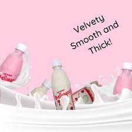

BENEFIT OF BELLYYO

What are the benefits of BELLYYO yoghurt?
Health benefit of yoghurt
Good for bones. A bowl of yogurt is said to have 300 grams of calcium. ...
Aids weight loss. ...
Faster workout recovery. ...
Controls blood pressure. ...
Builds immunity. ...
Prevents yeast infections. ...
Yogurt may not be for everyone.